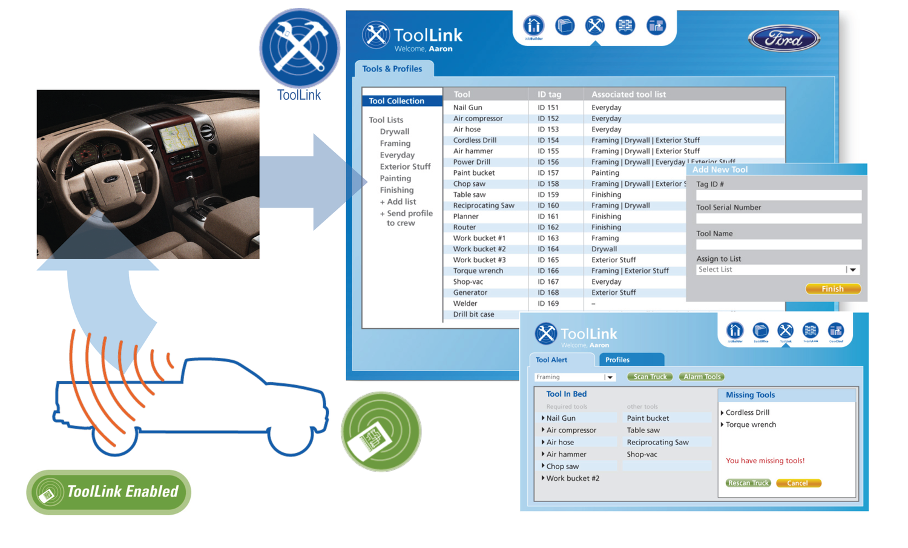
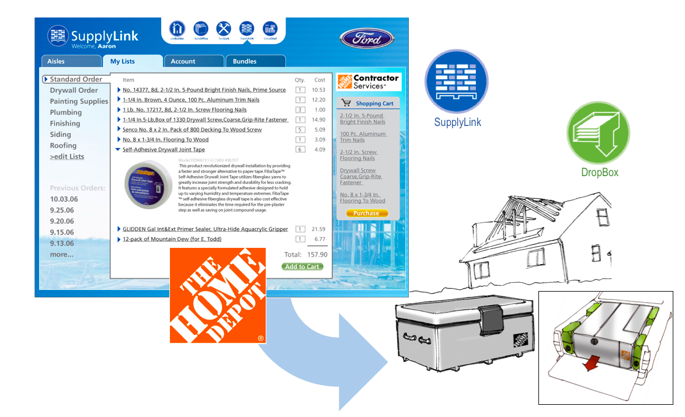
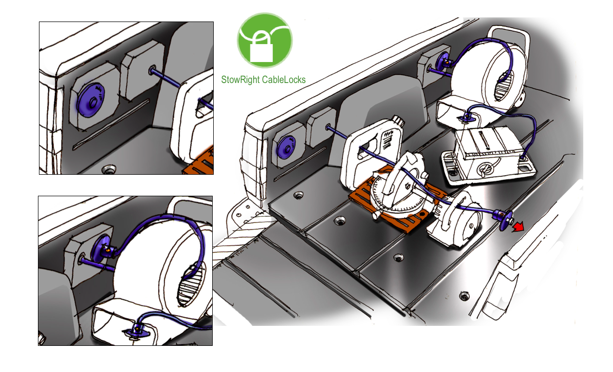

Ford · System & Service Design
FordWorks
A collection of integrated software, hardware and community resources designed to help general contractors and construction tradespeople maximize their uptime on the job and run a more successful, more rewarding business.
- Client
- Ford
- Audience
- Contractors & tradespeople
- Scope
- Software, hardware, partner services
One system, three toolsets
FordWorks helps professionals stay on top of complex and fluid operations from their office, their truck and the job site.
It is made up of three toolsets: TrackRight software and applications, StowRight hardware and tools, and FindRight communities and resources, connected through partners for ordering, communications, insurance, labor and financing.

ToolLink
A software application that works with RFID tags and on-board RFID readers to give a real-time inventory of tagged tools and gear in the truck, all managed through an in-dash interface.

SupplyLink
An online and on-board ordering utility built with key material suppliers like Home Depot and Lowe's to make material selection and ordering simple.
Deliveries go to a secure on-site DropBox, so materials are waiting when the crew arrives.

StowRight
Flexible, uncompromising security for storing and transporting tools, equipment and materials on the job site and in the truck.
StowRight integrates security systems, advanced tracking technology and modular storage units engineered to connect and lock to StowRight Rails built into the truck box.
